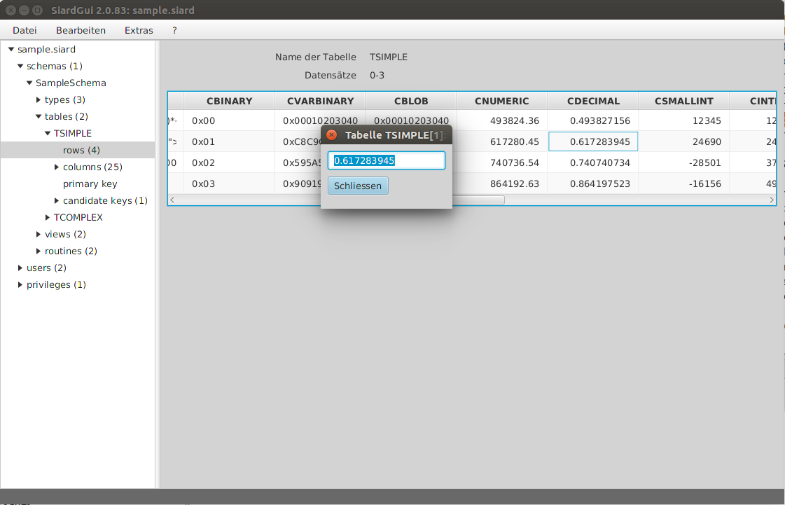
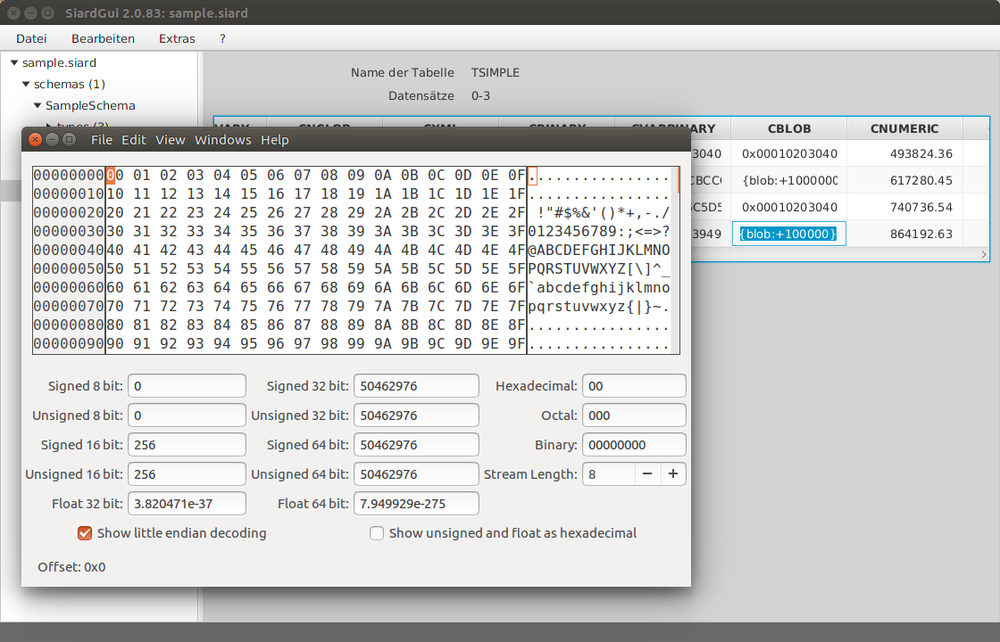
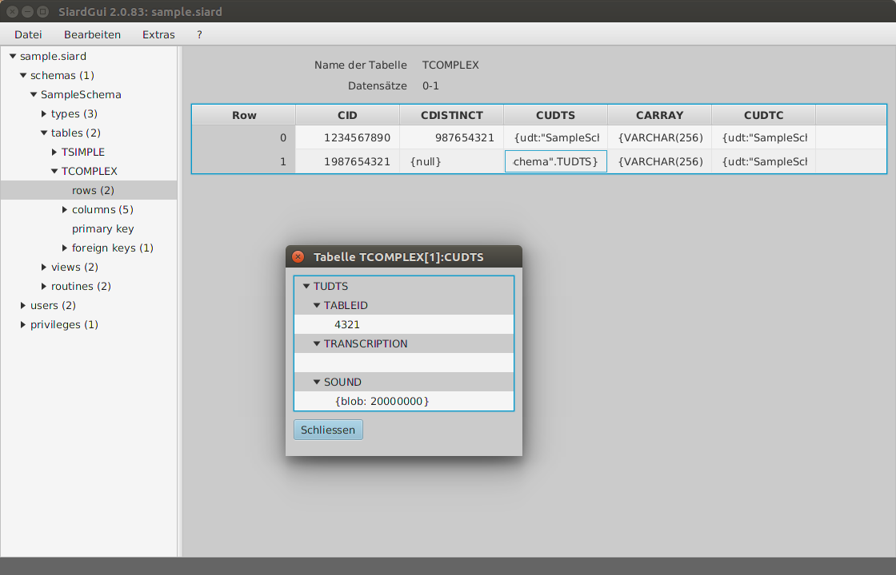
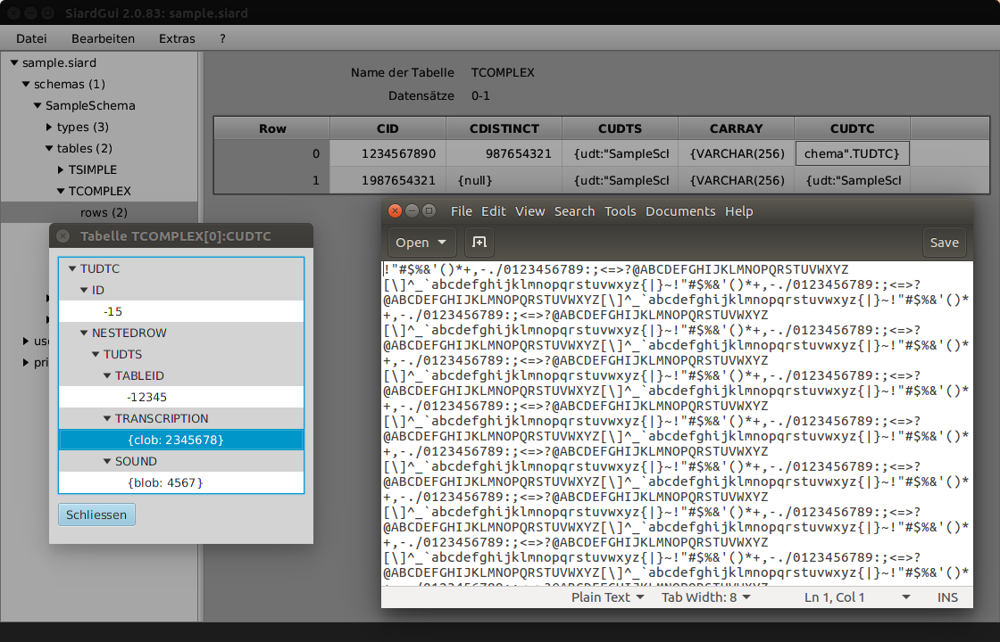

SIARD Suite 2.1 - Ausführen von SiardGui
Die Anwendung SiardGui implementiert eine interaktive graphische Benutzeroberfläche (GUI - Graphical User Interface). Mit Hilfe von SiardGui kann man:
- eine Datenbank herunterladen und in einem SIARD-Archiv speichern,
- die Metadaten in einem SIARD-Archiv anzeigen, durchsuchen, sortieren ergänzen und ändern, solange die Primärdaten unverändert bleiben,
- die Primärdaten in einem SIARD-Archiv anzeigen, durchsuchen, sortieren,
- ein SIARD-Archiv zu Recherchezwecken in eine Datenbank-Instanz laden,
- die Metadaten für ein SIARD-Archiv (ohne Primärdaten), aus einer Datenbank herunterladen, um sich einen ersten Überblick über den Archivierungsprozess zu verschaffen,
- eine Musterversion von Metadaten eines SIARD-Archivs mit existierenden Beschreibungen importieren.
SiardGui ist die zentrale Anwendung, mit welcher Daten im SIARD Format bearbeitet werden. Primärdaten können nicht geändert werden. SiardGui eignet sich nicht für komplexe Recherchen. Zu diesem Zweck wird empfohlen, das SIARD-Archiv in eine Datenbank-Instanz hochzuladen, in welcher der volle Umfang von SQL-Abfragen zur Verfügung steht.
Die Konversion von Datenbankfeldern vom Typ TIME oder TIMESTAMP hängt von der lokalen Zeitzone ab. Wenn die Zeit 15:30 in einer Datenbank in Zürich gespeichert ist, dann wird sie als UTC Zeit 14:30 (im Winter!) in den Metadaten des SIARD-Archivs gespeichert. Wenn alle Zeiten in der Datenbank unverändert als UTC-Zeiten interpretiert werden sollen, muss SiardGui mit der Option
-Duser.timezone=GMTaufgerufen werden.
SiardGui kann mit dem Namen eines SIARD-Archivs als einzigem Argument aufgerufen werden, welches dann nach dem Start sofort geöffnet wird. Dies ermöglicht, siardgui.cmd als Standardanwendung zum Öffnen von Dateien mit der Dateierweiterung .siard einzurichten.
Erstaufruf
SIARD Suite wird als ZIP-Datei ausgeliefert und muss zuerst ausgepackt werden. Die Datei SiardGui.jar befindet sich im Ordner lib der Auslieferung. Falls JAVA korrekt installiert ist, kann das Programm unter Windows mittels Doppelklick auf der JAR-Datei gestartet werden. Alternativ können die plattformabhängigen Skripts siardgui.cmd (Windows) oder siardgui.sh (LINUX) ausgeführt werden.
Wenn das nicht funktioniert oder ein anderes Betriebssystem benutzt wird, kann SiardGui auch von der Befehlszeile im Ordner lib von SIARD Suite wie folgt gestartet werden:
javaw -jar SiardGui.jar (Windows) java -jar SiardGui.jar (alle Betriebssysteme)
Damit das funktioniert, muss der Ordner bin der JAVA Distribution zur Umgebungsvariablen PATH hinzugefügt worden sein. Dies ist allerdings normalerweise schon bei der Installation von JAVA erfolgt. Sonst muss man den vollen Pfadnamen des JAVA-Programms eingeben: (z.B.
"C:\Program Files\Java\jre1.8.0_144\bin\javaw.exe" -jar SiardGui.jarinklusive Anführungszeichen).
Beim Erstaufruf von SiardGui erscheint eine Meldung wie diese:

Da SiardGui zu diesem Zeitpunkt die Sprache nicht kennt, welche der Benutzer vorzieht, hängt die Sprache der angezeigten Meldung von der im Betriebssystem eingestellten Sprache und von der bei der Installation von JAVA gewählten Sprache ab.
Wenn diese Meldung mit Ja quittiert wird, erhält man die Möglichkeit, einen neuen leeren Ordner auszuwählen, wo eine Kopie der SIARD Auslieferung installiert werden soll. Nach der erfolgreichen Installation, kann SiardGui in Zukunft vom gewählten Ordner aus gestartet werden oder mittels Doppelklick auf dem neu installierten Desktop-Icon.
Unabhängig davon, ob SiardGui nur von einem USB-Stick oder einer CD-ROM gestartet wurde, oder ob es auf dem PC des Benutzers installiert ist, erscheint das folgende Hauptfenster.
Hauptfenster
Das Hauptfenster besteht aus einem Menü (oben), einem Navigationsbaum (links), Inhalt (rechts) und einer Statuszeile (unten).

Die Trennwand zwischen Navigationsbaum und Inhalt kann frei verschoben werden. Auch die Grösse des ganzen Fensters kann frei angepasst werden (allerdings nicht kleiner als ein definiertes Minimum). Wenn eine SIARD-Datei in SiardGui geladen wird, sieht das Hauptfenster folgendermassen aus:

Die linke Baumstruktur dient der Navigation in den Metadaten. Im oberen Bereich des Inhaltsbereichs rechts können veränderbare Metadaten des links im Navigationsbaum ausgewählten Datenbank-Objekts eingegeben oder geändert werden.
Übernehmen und Verwerfen
Aktivieren der Schaltfläche Übernehmen kopiert die Änderungen in die Metadaten des offenen SIARD-Archivs. Wird Verwerfen gedrückt, werden alle Änderungen seit dem letzten Übernehmen rückgängig gemacht.
Tabelle der Unterobjekte
Eine Tabelle der wichtigsten Unterobjekte wird im Inhalt unter den editierbaren Metadaten angezeigt. Wird ein Spaltentitel angeklickt, wird die Tabelle nach dieser Spalte sortiert. Wird Da Tabellen ind Schemas und Spalten in Tabellen keine natürliche Ordnung in den Metadaten besitzen, werden sie in SiardGui normalerweise in alphabetischer Reihenfolge angezeigt. Deshalb ist diese Sortiermöglichkeit nützlich, wenn man sich in grossen Datenbank-Schemas zurechtzufinden versucht.
Tabelle mit Primärdaten
Unter rows werden für jede Tabelle ihre Primärdaten angezeigt. Da Tabellen sehr gross werden können, ist es unmöglich und auch nicht sehr nützlich, alle Datensätze auf einmal zu laden und anzuzeigen. Stattdessen wird eine Übersicht von maximal 50 über die ganze Tabelle verteilten Datensätzen angezeigt, wenn rows angewählt wird. Dann kann man wählen, welcher Ast detaillierter gezeigt werden soll, bis der Detaillierungsgrad erreicht ist, wo jeder einzelne Datensatz sichtbar wird.
Wenn ein Spaltentitel einer Primärdatenanzeige angeklickt wird, wird die ganze Tabelle sortiert (in einer temporären XML Datei, welche beim Beenden des Programms gelöscht wird). Das Sortieren kann eine Weile dauern, ist aber sehr nützlich, um gezielt einzelne Datensätze anhand eines Spaltenwerts zu finden.
Die Spaltenbreite der Primärdatenanzeige kann mittels Ziehen des Trennbalkens zwischen den Spaltentitels verändert werden.
Die Darstellung des Werts einer Zelle in der Tabelle ist nur nützlich für kurze Werte. Deshalb kann man sich eine ausführlichere Version des Werts anzeigen lassen, wenn man auf der Zelle doppelklickt.
Ein einfacher Datenwert wird so vollständig angezeigt und kann in die Zwischenablage kopiert werden.
Lange Texte (z.B. VARCHAR, CLOB oder XML-Werte) werden in einer externen Texteditoranwendung dargestellt, welche unter dem Menüpunkt Extras / Optionen konfiguriert werden kann. Unter Windows ist Notepad die Standard-Voreinstellung.

Lange binäre Werte (z.B. VARBINARY oder BLOB-Werte) werden in dem externen Binäreditor angezeigt, welche unter dem Menüpunkt Extras / Optionen konfiguriert werden kann. Unter Windows ist als Voreinstellung das Freeware-Programm HxD konfiguriert, das als Teil der SIARD-Auslieferung mitgeliefert wird.
Wenn bekannt ist, dass eine BLOB-Spalte Werte eines speziellen Typs enthält, etwa PDF- oder Bilddaten, dann kann statt dem Hexadezimaldisplay ein Binäreditor konfiguriert werden, der diesen Typ von Daten gut darstellt.
Benutzerdefinierte Datentypen (UDTs - user-defined data types) werden hierarchisch mit Attributnamen grau und Werten weiss angezeigt.
Jeder dieser Werte kann wiederum mittels Doppelklick im Detail angezeigt werden.
